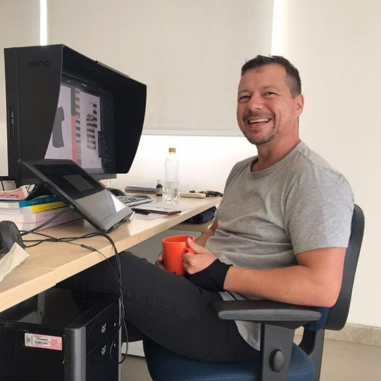

Sou um profissional multifacetado com habilidades em design gráfico,
fotografia, edição de imagens, edição de vídeo,
desenvolvimento front-end,
Minha capacidade de combinar diferentes habilidades técnicas me permitem abordar projetos de forma
abrangente e produzir resultados de alta qualidade.
Como designer gráfico, tenho experiência em criar layouts atraentes para materiais de marketing,
incluindo catálogos, banners, anúncios impressos e digitais. Tenho experiência com o pacote Adobe,
incluindo Illustrator e Indesign.
Na área de fotografia, tenho habilidades sólidas em técnicas de captura, iluminação e pós-produção.
Minha capacidade de criar composições visuais impactantes e meu olhar atento aos detalhes garantem
imagens de alta qualidade e esteticamente agradáveis.
Como editor de imagens, sou habilidoso no uso de softwares como Adobe Photoshop e Lightroom para
retocar, ajustar e manipular imagens, garantindo que elas estejam alinhadas às necessidades e
especificações do projeto.
Tenho experiência em edição de vídeo, utilizando programas como Adobe Premiere Pro e After Effects.
Minhas habilidades em edição, seleção de trilhas sonoras, aplicação de efeitos visuais e transições
garantem uma produção de vídeo profissional e envolvente.
Além disso, possuo conhecimentos em desenvolvimento front-end, com habilidades em HTML, CSS e
JavaScript. Minha capacidade de traduzir designs em interfaces funcionais e responsivas, combinada
com uma compreensão sólida dos princípios de usabilidade, resulta em experiências de usuário
intuitivas e agradáveis.
Sou um profissional versátil, capaz de trabalhar de forma independente e colaborativa, gerenciando
efetivamente meu tempo e prioridades. Tenho excelentes habilidades de comunicação, o que me permite
entender as necessidades dos clientes e colaborar com equipes multidisciplinares de forma eficaz.
Estou animado para trazer minhas habilidades e paixão para um novo desafio como parte de sua equipe.
Estou confiante de que minha experiência diversificada e minha abordagem criativa serão valiosas
para alcançar os objetivos da empresa.

 Instagram
Instagram
 GitHub
GitHub
 Artstation
Artstation